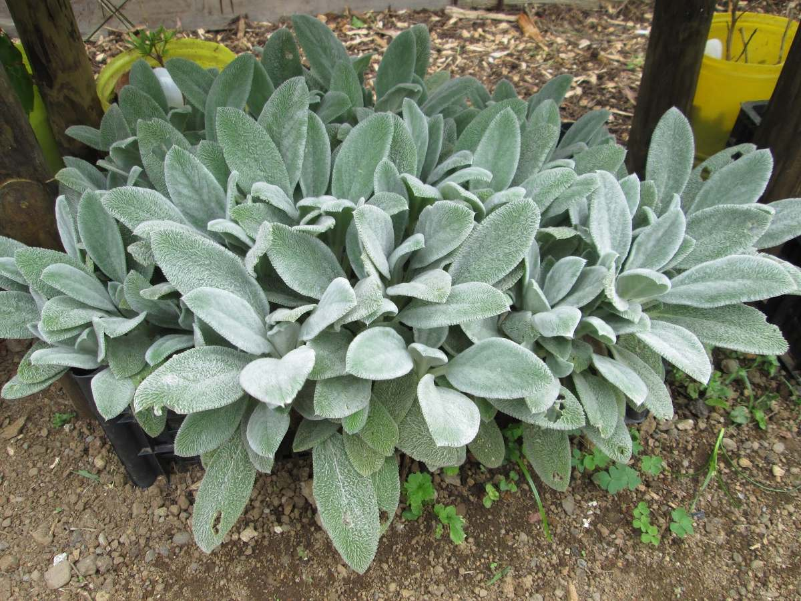
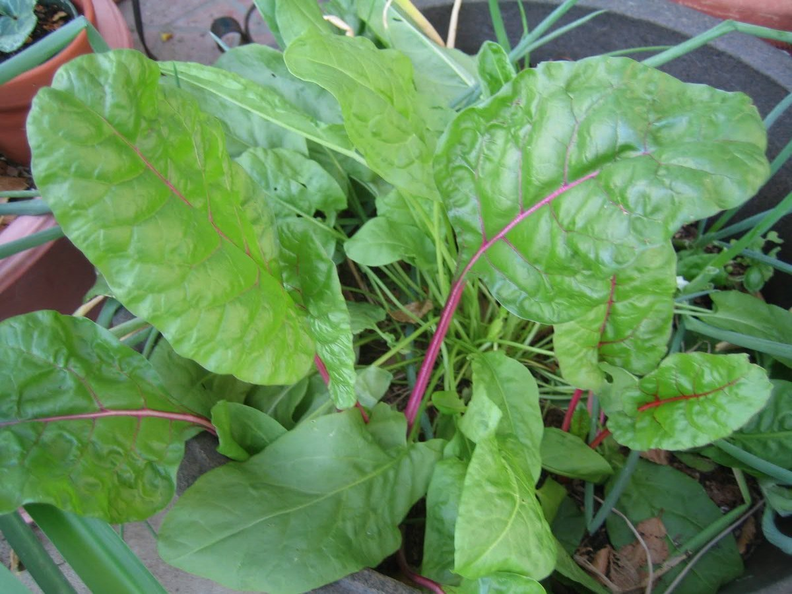
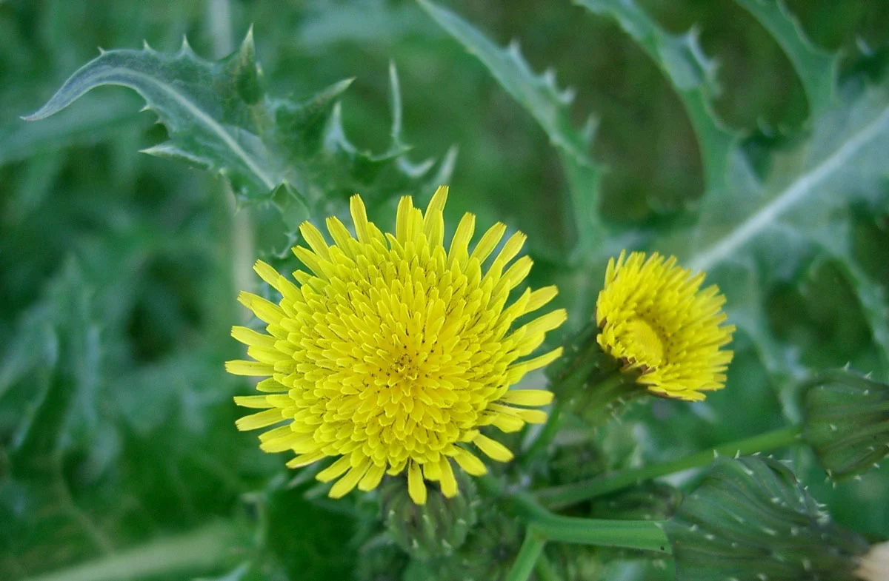
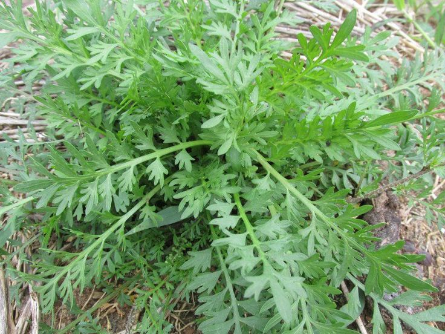

Plantas Alimentícias Não Convencionais, também conhecidas pela sigla PANCs, São espécies de vegetais pouco consumidas. Trata-se de plantas saudáveis e seguras para a saúde, que contém inúmeros benefícios nutritivos.
Elas costumam surgir em beiras de estradas, terrenos e até mesmo nas calçadas das cidades, como o dente de leão.
Tanto as folhas quanto as flores das PANCs são comestíveis e podem ser consumidas em saladas ou usadas para decorar pratos.
Aqui no site temos fotos, explicações e até mesmo indicações de comidas realizadas com as PANCs para ajudar quem quer utiliza-las.
NÃO CONSUMAS SEM LAVAR E NEM SE FOREM PLANTADAS EM SOLOS CONTAMINADOS.
PANCs

Suco de dente-de-leão
Ingredientes:
Folhas novas de dente-de-leão;
Água de coco.
Modo de preparo:
Bater as folhas em um processador, juntamente com a água de coco e tomar três vezes ao dia. Geralmente, as folhas de dente-de-leão possuem um sabor amargo e, por isso, devem-se usar as mais novas, cujo sabor é menos intenso. Além disso, podem-se misturar outros ingredientes, como suco de maçã, hortelã e gengibre.
clique aqui:{kind=link}
Salada com flores de ipê:
Ingredientes:
rúcula
Alface
Broto de feijão
Cebolinha
Coentro
Tomate
Picles
Flores de Ipê(Há variedades roxas, amarelas e brancas de Ipês com flores comestíveis.)
Modo de preparo:
Após colher as flores do Ipê, basta higienizá-las junto aos demais vegetais. Para o preparo, pique a rúcula, o alface, broto de feijão, cebolinha, coentro, tomate e picles. Misture-os e tempere como preferir. Finalize com as flores.
clique aqui:{kind=link}
Geleia com pétalas de rosas
Ingredientes:
2 xícaras (chá) de água
4 xícaras (chá) de açúcar
30 unidades de rosas vermelhas comestíveis
Suco de limão a gosto
Modo de preparo:
1. Coloque em uma panela a água, o açúcar e formar uma calda grossa.
2. Adicionar as pétalas e o suco de limão cozinhar em fogo baixo por 1 hora, mexendo às vezes.
clique aqui:{kind=link}
GELATINA DE BEGÔNIA
Ingredientes:
100g de flores da begônia
4 colheres de sopa de açúcar
20g de gelatina sem sabor
MODO DE FAZER:
Triture no liquidificador as flores de begônia, adicione o açúcar e a gelatina diluída Refrigere até atingir a consistência desejada. Se quiser um sorvete, basta congelar.
clique aqui: {kind=link}
Para o peixinho da horta empanado
Ingredientes:
12 folhas de peixinho da horta
2 ovos
1 xícara (chá) de farinha de trigo
1 xícara (chá) de farinha panko
Óleo suficiente para untar uma forma
Sal a gosto;Outros temperos naturais a gosto
Para o molho de abacate:
1 abacate (sem casca e sem semente)
suco de ½ limão
2 colheres (sopa) de água
Sal e pimenta do reino a gosto
Modo de preparo:
Separe os peixinhos, lave e seque bem.Separe três pratos para empanar: um com ovo batido, um com farinha de trigo e temperos (sugestão: sal, pimenta do reino, páprica), e outro com a farinha panko também temperada.
Passe o peixinho no ovo, na farinha de trigo, no ovo novamente e depois na farinha panko. Quando todos estiverem empanados, disponha-os sobre uma forma untada com óleo.
Leve ao forno por 200°C até dourar.Para o molho, adicione todos os ingredientes no liquidificador ou processador.Bata tudo até que fique um creme homogêneo.Após ficar crocante e dourado, retire o peixinho do forno.Sirva-o com o molho de abacate.
clique aqui: {kind=link}
Omelete com azedinha no café da manhã
Ingredientes:
200g de azedinha
2 colheres de manteiga
6 ovos
150 ml de leite
sal a gosto
Modo de preparo}:
Lave as folhas de azedinha (200 g), corte e cozinhe em uma panela com manteiga por 2 a 3 minutos.
Bata os ovos (6) com leite (150 ml) ou nata (com teor de 33% de gordura), adicione sal e despeje a mistura sobre a azedinha. Frite a omelete em fogo baixo até que esteja bem cozida.
clique aqui: {kind=link}
Ravioli de ricota e serralha do chef Raphael Despirite
INGREDIENTES:
1 xícara (chá) de farinha
2 unidades ovos
1 colher (chá) de azeite
1 colher (chá) de leite
400g de ricota
sal a gosto
50g de manteiga sem sal de "pinoli"
Algumas flores de serralha
queijo "grana padano" a gosto
MODO DE PREPARO:
Misture todos os ingredientes do ravióli. Amasse e estique a massa com a ajuda de um rolo.
Corte a massa em quadradinhos e disponha sobre metade deles a ricota e a flor de sal. Feche com outro quadrado, formando os raviólis.
Em uma panela com água abundante, cozinhe até que eles subam à superfície.
Para fazer o molho, derreta a manteiga em uma frigideira e doure os "pinoli".
Disponha os raviólis nos pratos e coloque a serralha crua por cima. Regue com a manteiga e os "pinoli" e salpique o queijo.
clique aqui:{kind=link}
Suco verde ora pro nobis
ingredientes:
1 litro de água gelada
1 xícara de chá (bem cheia) de folhas frescas de ora-pro-nóbis
1 maçã verde picada em cubos
Suco de 4 limões taiti
Gelo a vontade
Açúcar ou adoçante se preferir
modo de preparo:
Reúna todos os ingredientes;
Em um liquidificador, primeiro coloque a água e o suco de limão
Em seguida, coloque a maçã e a ora-pro-nóbis;
Bata essa mistura no liquidificador até que todos os ingredientes incorporem;
Despeje no copo e adicione gelo e açúcar. Misture, Sirva e bom apetite!
clique aqui:{kind=link}

Biscoito de amor-perfeito
Ingredientes:
1 e 1/2 de xícara de farinha de trigo especial
1/4 de xícara de açúcar
1/2 de xícara de manteiga em temperatura ambiente
1 colher de chá de extrato ou essência de baunilha
1 clara de ovo
1 colher de chá de água gelada
flores frescas de amor-perfeito ou mini-amor-perfeito
Modo de Preparo:
Pré-aqueça o forno entre 160 a 180 graus Celsius. Misture o açúcar e a farinha em uma tigela grande. Adicione a baunilha e a manteiga em pequenos cubos. Delicadamente e com as mãos frias, vá misturando os ingredientes até formar uma farofa. Depois una a farofa formando uma bola. Faça um rolo e corte os biscoitos, ou abra a massa e utilize um cortador próprio para biscoitos.
Coloque os biscoitos em uma forma forrada com papel manteiga e asse por 30 minutos, ou até que dourem ligeiramente. Retire-os do forno e coloque para esfriar sobre uma grelha.
Misture a clara do ovo com a água gelada e com a ajuda de um pincel, pincele a superfície de um biscoito já frio de cada vez, adicionando uma flor, pressionando-a no centro. Repita a operação com todos os biscoitos. Polvilhe levemente açúcar sobre as flores.
Recoloque os biscoitos sobre a forma com o papel manteiga e asse por mais 5 minutos.
Retire e deixe esfriar completamente sobre a grelha antes de servir ou guardar em recipientes bem fechados.
clique aqui: {kind=link}
Pinga medicinal de mentruz
Ingredientes:
Um punhado de mentruz
Água quente
Cachaça pura
Modo de preparo:
Recolhe o mentruz e lave bem, corte a raiz dele, coloque um pouco de água quente para retirar o ácido dele(opcional> e completa a garrafa com pinga pura
clique aqui:{kind=link}